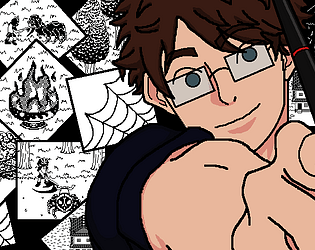
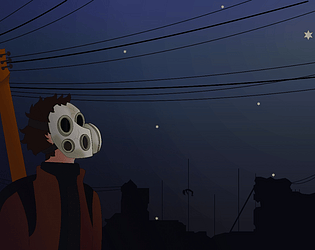
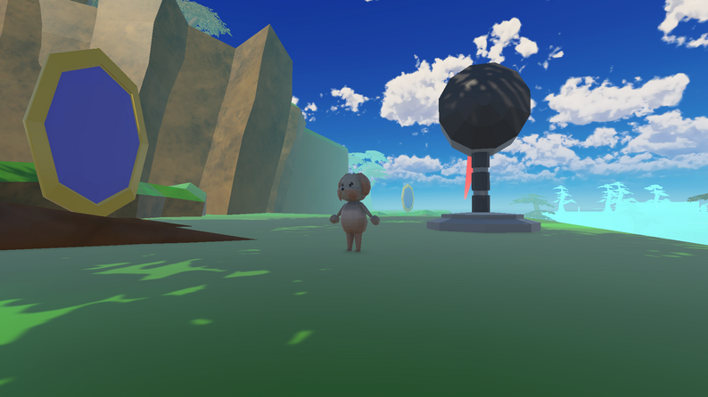
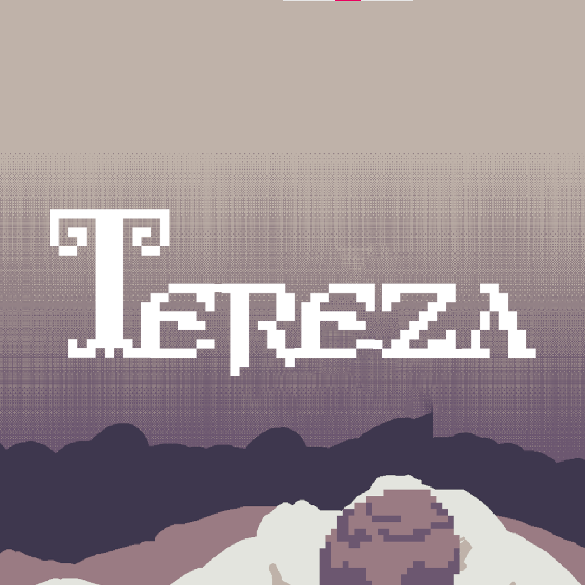

Game Dev • Estudante FATEC • Game Design • Programador
Sou um entusiasta de programação, apaixonado especialmente pelo desenvolvimento de jogos e por criar experiências interativas. Além da programação em si, também gosto muito de desenhar cenários e trabalhar com level design, sempre buscando contar histórias por meio dos ambientes. Tenho boa experiência com C# e princípios SOLID, e estou constantemente me aprimorando para entregar trabalhos cada vez melhores.

Jorogumo's Story é um jogo baseado na lenda japonesa da Jorogumo, um youkai com forma de mulher-aracnídea. Na narrativa, um samurai decide enfrentar a criatura para proteger seu vilarejo. O jogador assume o papel de um quadrinista que precisa criar uma HQ sobre esse youkai, e o jogo representa o processo criativo dessa história.
Progranação em bolcos • Game Design • Level Design • Logica

Após o primeiro contato com seres extraterrestres inicialmente pacífico a relação entrou em conflito devido ao medo humano, culminando na quase extinção da humanidade. No jogo, você controla Hoppe, um dos poucos sobreviventes, que parte em uma jornada para encontrar vida e abrigo. Enfrentando criaturas desconhecidas e diversos perigos, ele continua seguindo em frente guiado pela esperança.
Progranação C# • Game Design • Level Design

Quando o dono Graciano sai para trabalhar, Pepito descobre que sua irmã, Lakshmi, desapareceu. Para resgatá-la, o pequeno cachorro embarca em uma aventura em que sua própria casa se transforma em mundos imaginários cheios de desafios. Ele precisa atravessar esses cenários fantásticos para encontrá-la.
Progranação C# • Game Design • Level Design
É um jogo multiplayer 3D conectado pela Steam, desenvolvido com o framework Mirror na Unity. Nele, os jogadores precisam sobreviver enquanto fogem de um monstro que patrulha o mapa. Para se proteger, o jogador pode se esconder em diferentes pontos do cenário, usando o ambiente a seu favor. O objetivo final é coletar galões de gasolina espalhados pelo mapa e utilizá-los para incendiar o ninho do monstro, encerrando a ameaça e vencendo a partida. A combinação de cooperação, stealth e tensão constante cria uma experiência desafiadora e envolvente.
Progranação C# • Game Design • Level Design

Clara tem uma avó chamada Tereza, que veio a ter uma grave doença, e agora seu objetivo é visitá-la e tentar recuperar as memórias de uma juventude que não pode ser perdida. Clara precisa coletar lembranças e garantir que sua avó nunca esqueça de seu rosto.
Progranação C# • Game Design • Level Design
Email: nicolastelesfaria@gmail.com
GitHub: nico400
LinkedIn: nicolasteles